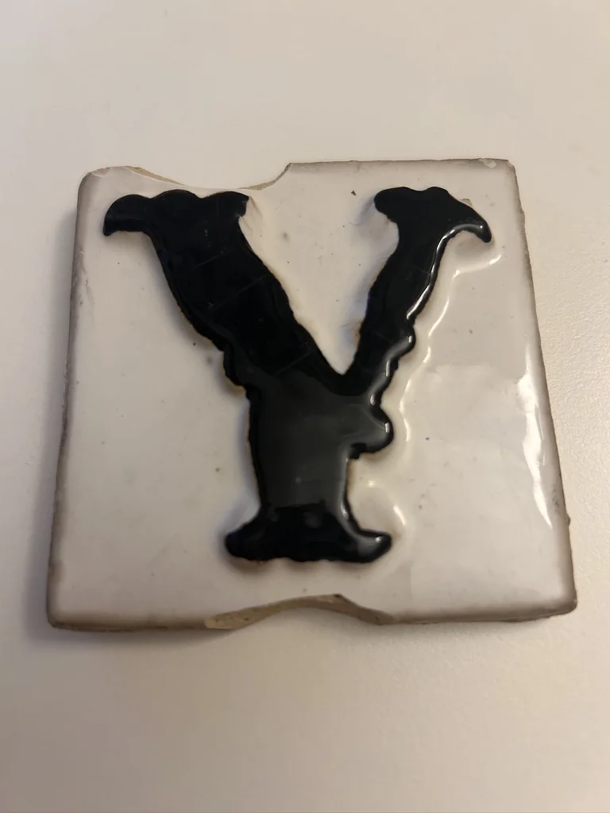
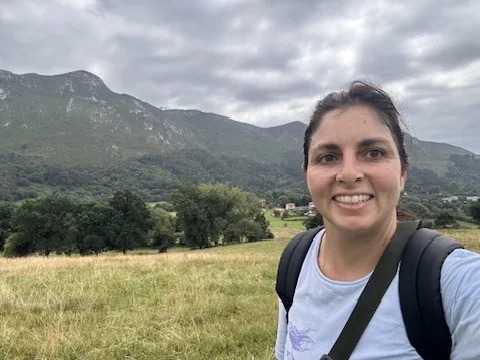
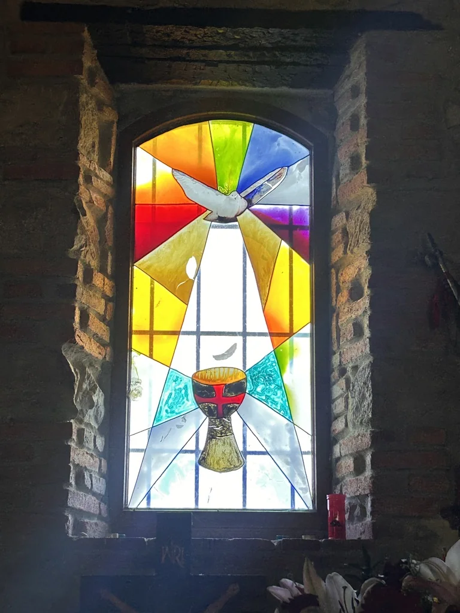
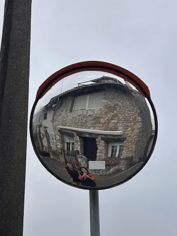
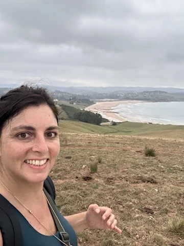
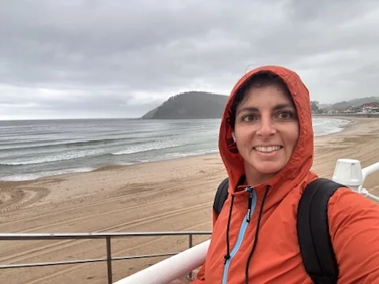
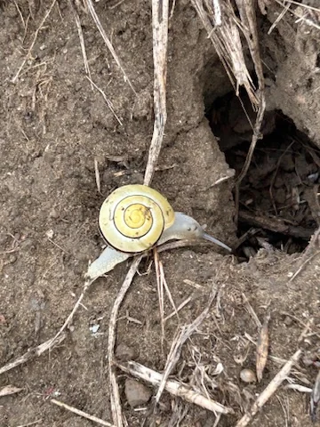
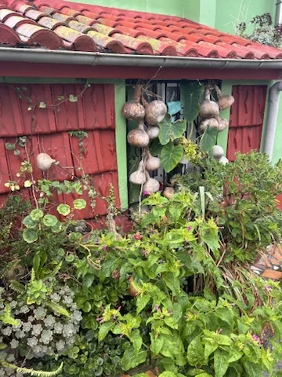
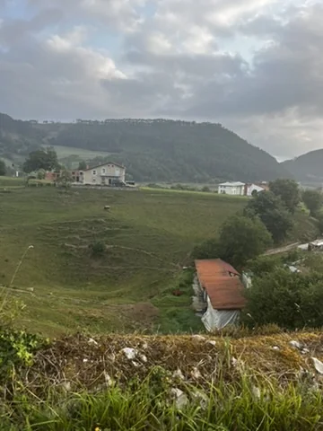
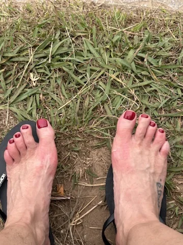

Me desperté esa mañana nerviosa, con esa excitación que trae una nueva aventura.
Tenía que llevar a los gatos a un campamento donde iban a pasar las siguientes tres semanas y mi madre, que por fin había aceptado que para mí son una parte importantísima de mi familia, se ofreció a acompañarme hasta la sierra con su coche y dejarme después en la estación.
De camino, en una carretera bastante solitaria, el coche empezó a sonar rarísimo.
No se encendió ninguna luz. Ningún aviso. Ninguna pista de qué podía estar pasando.
Hasta que mi madre dijo:
—A ver si hemos pinchado.
Paré en una cuneta y, efectivamente, la rueda estaba completamente a ras del suelo.
Mi tren salía en dos horas.
No había más plazas para ese día. Lo miré.
Y allí estábamos: mi madre, yo, los gatos refugiados en una esquina a la sombra, una rueda destrozada y, en el suelo, una baldosa que decía simplemente:
Y.

¿Y si no llego a coger el tren?
Vale.
¿Y qué más es posible?
¿Y qué tengo que aprender de esta situación?
Mi hermano Gonzalo apareció como una especie de ángel telefónico y consiguió mandarnos a un hombre de la grúa.
Después apareció un Uber cuyo conductor, casualmente, también había pinchado ese mismo día. Me llevó, esperó y me trajo de vuelta hasta el hotel donde dejábamos a los gatos.
Después llegó un segundo hombre de la grúa, que terminó dejándome en Plaza Castilla.
Y de alguna manera, después de todo aquel caos, llegué a Chamartín con casi una hora de antelación.
Recuerdo perfectamente la sensación.
Como no había entrado en pánico, todo había empezado a alinearse de una forma casi mágica.
Y entonces sí.
En Chamartín cogí el tren rumbo a Santander con Marta. Rumbo a uno de esos viajes de los que vuelves más sabia, más ligera, más plena y, sobre todo, más llena de vida.
El Camino de Santiago.

Este Camino ha sido distinto a otros que he hecho.
No ha sido un camino especialmente social, aunque por el camino nos hemos encontrado con grandes anfitriones, personas que nos han recibido con cariño y con los brazos abiertos.
Ha sido un camino de mucha, mucha conexión.
De integración.
Y también de preparación para una nueva etapa que yo ya sentía abriéndose.


Paisajes de esos que te dejan sin aliento. Flores de todas las formas y colores. Baños reconstituyentes en el Cantábrico helado. Caminar bajo la lluvia. Cantar a voz en grito.


Ha sido una vuelta a la vida.
Un suspiro para el alma.
Un viaje hacia fuera y también hacia dentro. Un integrar la sombra sin dejar de mirar toda la belleza que había alrededor.
440 kilómetros de puro disfrute.
Mucho desnivel. Muchas de esas cuestas que miras desde abajo y, antes siquiera de empezar a subir, les das las gracias. Porque sabes que cuando llegues arriba vas a ser un poquito más fuerte.
Mariposas volando alrededor. Gatos esquivos. Caballos salvajes.


Bosques y rocas.
Playas y precipicios.
Cabras y vacas.
Lluvia, frío, cansancio, canciones, conversaciones, silencios.
Y nosotras caminando.
Kilómetro tras kilómetro.
Como si mientras avanzábamos por el Camino algo dentro también fuese encontrando su sitio.


Quizá por eso aquel viaje empezó con una rueda pinchada, una carretera perdida y una baldosa en el suelo que decía Y.
Porque podía haberme quedado en:
¿Y si no llego?
Pero aquel día elegí otra pregunta:
¿Y qué más es posible?
Un pequeño paso de vuelta a ti
No siempre hace falta un viaje largo para empezar a escucharte. Puedes explorar estos ejercicios para volver a conectar contigo o regalarte una de las prácticas en audio.